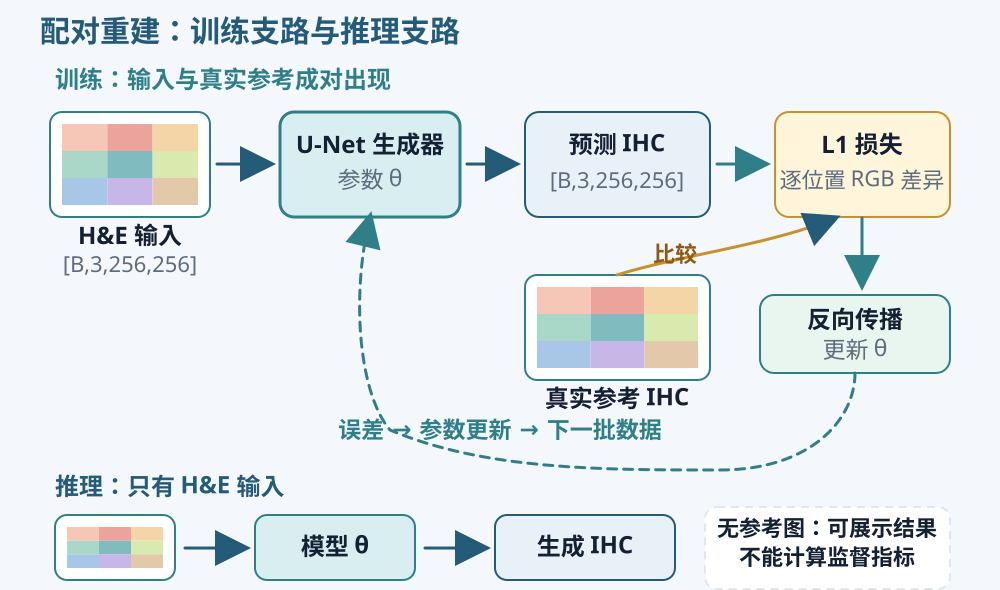
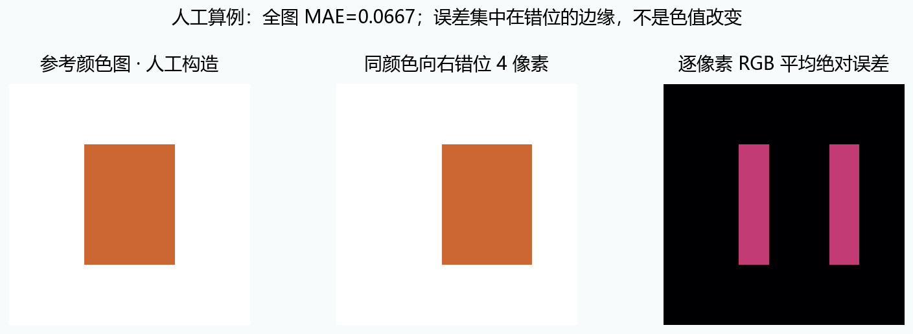
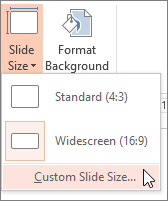
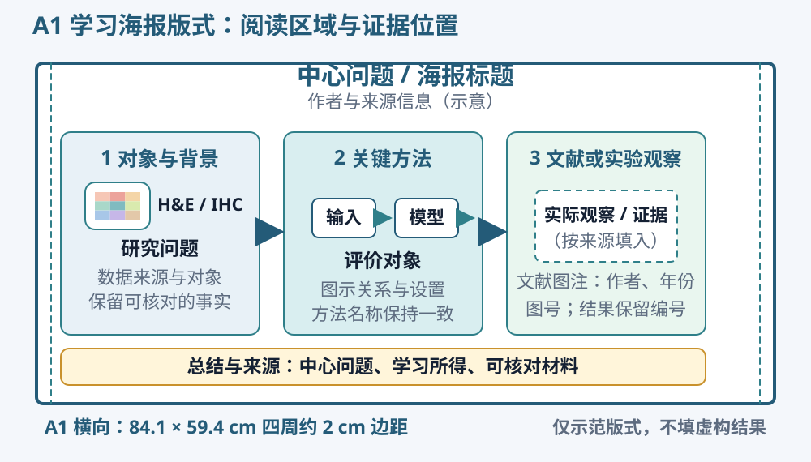

图像重建与损失
H&E–IHC 图像翻译以 H&E 为输入，预测配对 IHC 图像的颜色。分类输出类别分数，分割输出逐位置的类别，图像翻译则输出逐位置的连续 RGB 数值。真实配对图为预测提供了比较对象。
图像回归的输入与输出
分割模型给每个位置预测类别，这次则要给每个位置预测红、绿、蓝的连续强度。输入和目标虽然都是三通道图片，它们的染色含义不同。 猫狗识别为一张图像输出类别分数，分割为每个位置输出类别信息。图像回归则为每个位置预测连续数值。在 H&E–IHC 中，输入是 H&E 的三个 RGB 通道，输出是对应 IHC 的三个 RGB 通道，目标值来自真实参考图像。
例如，一批缩放为 256×256 的图块可以表示为 [B, 3, 256, 256]，B 是批量大小。输出保持相同的空间尺寸和三个通道。这里的三个数表示红、绿、蓝颜色分量，不要求相加等于 1。若预处理把参考图像归一化到 0—1，模型输出与评价也需要使用相同范围。
U-Net 的编码器、解码器和跳跃连接可以继续用于图像回归。编码器整合较大范围的图像信息，解码器恢复空间尺寸，跳跃连接传递相应尺度的特征。输出层需要匹配连续颜色目标。网络的结构和训练目标共同决定它学习什么，不能只因为网络名称相同就认为两个任务完全一样。

训练时，H&E 经过模型得到预测图，再与真实 IHC 计算误差；反向传播根据误差调整参数。推理时只输入 H&E。画流程图时，将真实参考连接到损失计算，把预测路径和参数更新的关系标清楚。
L1 损失与颜色误差
同一位置的红色数值，参考是 0.8，预测是 0.6，相差 0.2。对每个位置、每个颜色分量作同样的比较，再汇总，就能得到 L1 损失。 L1 重建损失逐个比较预测图和参考图对应位置的 RGB 数值，取绝对差，再求平均。它也可以理解为 RGB 平均绝对误差（MAE）。若某个通道的参考值为 0.8、预测值为 0.6，这个位置在该通道上的绝对差就是 0.2。整张图的损失对所有参与计算的位置和通道汇总。
L1 直接约束颜色与位置的对应关系。配对错位时，即使两张图具有相似结构，也会产生较大逐像素差异；大片白背景接近时，全图平均误差可能显得较低。因此训练损失下降需要结合可见图像和评价范围理解。
Sigmoid 可以将输出映射到 0—1，但此时它约束的是颜色数值范围。它并没有把三个 RGB 通道变成三个互斥类别。选择输出层和损失时，先写出目标张量的含义、形状和范围，再检查模型是否与它一致。
在 Kaggle 中练习连续图像输出、L1 计算和一次参数更新。观察预测、参考和误差的形状，修改少量像素后比较损失变化。完成这些局部练习后，再为自己的目标项目编写数据读取、训练和结果保存过程。
交互示意
一个像素的 RGB 误差
左边的参考颜色固定。调整右边颜色的共同偏移，逐通道核对差值，再看三个绝对误差怎样汇总。
人工参考颜色
人工预测颜色
教学交互示意，数值和画面随操作实时计算。
配对变换与验证集
第三章的照片与掩膜要一起翻转，配对染色图也一样。若只有输入改变位置，目标中的同一组织就不再与它对应。 输入和参考需要接受相同的几何变换。如果 H&E 随机翻转而 IHC 保持原样，它们的空间关系就被破坏了。随机裁剪、旋转和翻转都应共享对应参数；标签或目标的处理方式要依据它们的实际含义选择。IHC 是 RGB 参考图像，任意改变它的颜色会改变预测目标。
验证集用于观察未参与参数更新的数据，并选择训练轮次或设置。保存验证表现较好的权重后，使用固定权重评价测试集。验证时关闭训练专用行为并停止梯度计算；需要区分模型的训练和评价状态，以及梯度是否被记录，这两项作用不同。
保存配置时写明数据清单、划分、输入尺寸、模型结构、批量大小、学习率、训练轮数和随机种子。每次实验使用独立名称，保留训练及验证损失记录。重新运行时能够确定读了哪些数据、用了哪份权重，才能比较两次结果。
重建评价与实验
一张预测图的整体颜色接近参考图，局部边缘仍可能错位。整体误差、固定样例和误差较大的局部描述不同现象，需要结合起来判断模型表现。
主要指标与补充指标
一张生成图可能颜色接近参考，却在边缘处错位。绝对误差图保留了偏差发生的位置，总体指标把这些差异汇总成一个数。 RGB 平均绝对误差（MAE）对各位置与通道的绝对差求平均，越低表示当前数值范围下的平均颜色差越小。0—1 图像上的 MAE 为 0.05，表示平均通道绝对差为 0.05，不能解释为“95% 的细胞正确”。汇总时注明是先计算每个图块再求平均，还是对所有像素一起平均；不同尺寸的图块在两种计算中可能具有不同权重。
峰值信噪比（PSNR）根据均方误差及规定的动态范围计算，单位是 dB，通常越高表示像素误差越小。比较前必须统一图像范围，0—1 与 0—255 不能直接混用。预测和参考完全一致时，均方误差为零，PSNR 会达到正无穷；统计时记录这种情况及有效数量，不把无穷值直接填成零。
结构相似性指数（SSIM）在局部窗口比较亮度、对比度和结构相关信息。记录所用窗口、颜色通道处理及图像范围，同一比较采用相同设置。它提供了颜色绝对误差之外的一种观察，但仍会受到配准和背景区域影响。
起步实验以 RGB MAE 为主要指标即可，再选择一项理解清楚的补充指标。增加指标前先解释它在比较什么，以及可能漏掉什么。每个指标都应与同位置图像一起阅读，不只保留一个汇总分数。


组织区域与染色相关观察
整张图里如果有很多白色背景，平均误差可能主要反映背景的相似程度。我们需要在组织区域里，分别观察颜色、结构和参考中的显色位置。 病理图像常包含白背景。全图误差会把背景也计算在内，如果想进一步观察组织区域，可以在真实 IHC 参考图像上定义固定的非白区域掩膜，并让所有方法使用同一个范围。例如，RGB 最小通道值低于某个预先确定阈值的像素可以组成简单非白区域。这个掩膜依据颜色阈值选取像素，可能同时包含组织和伪影，统一称为“非白区域掩膜”。肿瘤或细胞区域则需要相应标注或分割方法来确定。
参考图没有有效非白像素时，区域指标应记录为无有效区域，同时保留全图指标。阈值和范围应在查看测试结果前确定。若每个预测自己选择评价区域，各方法就可能比较不同位置，结果难以解释。
DAB 颜色分量可以作为进一步学习内容。颜色分离依据一组染色方向估计相对分量，其数值会受染色、扫描和预处理影响。棕色面积差较小，也可能伴随位置错误；逐位置误差与面积差描述不同现象。初次项目先把 RGB 评价、配对显示和局部检查完成，再按问题需要增加这类分析。
固定样例与局部失败
连续展示几张最漂亮的图片，仍看不出模型容易在哪种位置失败。固定样本和相同位置的局部放大，能够呈现不同方案的具体差异。 在查看方法分数前，先按样本编号或其他固定规则选一组展示样例。它们用于稳定比较不同实验。计算结果后，再找误差较大的样例，单独标为失败分析。固定样例与失败样例的选取规则都写进图注，避免只展示最漂亮的结果。
每组图保持相同顺序：H&E 输入、真实参考 IHC、参照方法、学习模型。先比较完整组织轮廓，再观察局部核背景、空隙和棕色区域。放大同一位置时，各栏使用相同坐标和缩放比例，在原图上画出对应框。
记录具体观察，例如“配对 A 的右上方空隙出现额外棕色”“配对 B 的组织边缘比参考更平滑”。接着检查输入与参考是否有可见错位、预处理是否一致，以及现象是否也出现在其他图块。把观察和原因推测分别写，后续实验才能针对原因展开。
处理没有配对参考的新 H&E 时，可以展示输出并记录来源和外观变化；MAE、PSNR 等有监督指标需要对应参考才能计算。评价这些新图的预测准确性，还需要取得对应的真实参考或独立标注。
在 Kaggle 中练习读取逐图指标、绘制对照图和保存证据索引，检查顺序、数值范围及样本编号。练习中的人工数值用于理解操作；将这些方法应用到自己的项目后，保存实际测得的逐图结果，再生成汇总表与对照图。
参照方法与受控比较
即使不训练模型，直接把 H&E 输入当输出也能得到一组误差。把这个明确的参照放到旁边，再判断学习后的方法改善了哪些现象。 参照方法提供一个明确的比较起点。例如，将 H&E 原图直接作为输出，能够观察完全不进行染色转换时的图像误差；它称为恒等参照。再与自己训练的配对重建模型比较，可以检查模型是否学到了比保留输入更合适的预测。
选择一个问题做受控比较。可以比较是否使用配对翻转增强，也可以比较同一网络的两种容量。一次只改变所研究的因素，保持数据划分、评价样例、主要指标和权重选择规则一致。记录实际耗时，较大的网络和相同轮数未必对应相同计算量。
生成对抗网络（GAN）的条件形式适合作为后续扩展：生成器根据 H&E 预测 IHC，判别器查看输入与真实或生成目标的组合，给出训练反馈。它可能改变局部纹理，也增加训练难度。希望研究它时，先读 pix2pix 的目标和更新方式，再设计与 L1 重建的公平比较。基础项目完成配对重建与评价后，可以按兴趣选择这项扩展。
独立项目：图像翻译
项目 Notebook 提供 BCI 配对数据检查、图像显示、网络与训练循环、预测保存和评价框架。根据各部分的文字提示补全代码，记录实际结果。代码与海报作为考核材料，不提供标准答案。
制作一张 A1 项目海报，说明领域背景、方法、项目流程和实际结果；图像、文献和数字注明来源。具体排版操作见配套材料。
点击 Copy & Edit 保存自己的副本。Notebook 中的 ... 是待填位置；修改后运行所在代码块。本项目不提供标准答案。
学习海报
学习海报的内容
海报中的领域介绍对应文献与真实图像，方法说明对应计算流程，项目结果对应自己的预测和指标。这些内容共同说明研究对象、实现方法和实际观察。
先写一句海报中心问题，例如“配对图像重建怎样学习 H&E 与 HER2-IHC 的对应关系”。围绕它选择三至四个内容区域：对象与背景、关键方法、文献或实验观察、总结与来源。把长参数表、操作日志和大段代码留在项目材料里。海报保留理解图示和结论所需的信息。
文献图像与个人结果要区分。使用文献图时注明作者、年份、图号及原图或改编关系，并检查使用条件；使用自己的结果时保留样本编号、方法名称和实际实验设置。未完成的实验可以写成计划，但不填写想象的指标或预测图。
海报中的一张中心图应占据足够空间。可以把真实配对、模型结构和评价对象组织在同一阅读区域，也可以展示几种文献方法的差异。文字解释图中具体对象，避免把已经在图中说明的内容再写成长段。
A1 画布与排版操作
照片、流程图和结果表已经选好，现在需要把它们放到同一张大页面上。A1 画布、栏宽和参考线给文字与图片提供共同的对齐位置。 学习海报是一页能独立阅读的展示材料，旁观者应先看见问题和中心图，再顺着版面找到依据。A1 横向画布提供足够空间放配对图像、方法关系和简短说明。动手前先列出要放入的图、文字与来源；第一次用 PowerPoint 可先看第 2 章的画布与对象教程。版面初步完成后，再考虑用 iSlide 官网介绍的对齐和排版工具调整细节。
在 PowerPoint 中创建空白演示文稿，选择“设计—幻灯片大小—自定义幻灯片大小”，把宽度设为 84.1 厘米、高度设为 59.4 厘米，选择横向。先设画布再排版，可以减少后期整体缩放。保留一页作为海报，其他草稿页另存或在导出时排除。

自定义大小对话框中的宽、高使用实际长度；如果当前界面单位是英寸，输入带单位的 84.1 cm 和 59.4 cm，再核对换算结果。点击确定后重新查看尺寸设置，确认采用的是横向 A1。
页面四周先留约 2 厘米边距，顶部安排题目与作者，下方按内容划分两至三个阅读区域，底部放必要参考文献。打开“视图”中的标尺、网格线和参考线，拖动参考线确定共同边界。区域宽度可以调整，标题、图片和正文应对齐到同一组边界。
标题可以从 58—72 磅开始设置，区域标题约 30—36 磅，正文与图注约 22—26 磅，作者约 26—32 磅，再按实际内容和阅读距离调整。先建立清楚的字号层级，文字放不下时精简内容或调整区域，不持续压小全部字号。
选择多个对象，使用“形状格式”中的“对齐”以及“横向分布”“纵向分布”统一位置和间距。在“大小与位置”中输入图片的宽度，并保持纵横比。流程中的相关对象可以组合，修改内部结构时取消组合。使用连接符连接形状，移动形状后检查线端是否仍然连接正确。

需要复习对象操作时，可打开第 2 章 PPT 图文实践，对照大小、对齐、组合与图片裁剪的步骤。使用现成主题前，先检查它是否适合海报的纸张尺寸和阅读距离。
插入结果图后，按海报实际显示尺寸检查坐标、图例和图注。照片保持真实颜色；同类方法在不同图中沿用同一颜色。局部框不能遮挡关键组织结构，放大图应标出原始位置。页面上的每个图、框和文本都保留为可编辑对象。
海报导出与检查
屏幕上看起来合适的海报，导出后可能出现小字、换行或裁切。打开最终 PDF 并查看局部放大图，才能确认实际交给读者的内容仍清楚。 先保存 PPTX 源文件，再通过“文件—导出”或“另存为”输出 PDF。导出选项只选择最终海报页。重新打开 PDF，检查页面尺寸、中文字体、上下标、图像清晰度和连接符是否完整，确认没有对象被裁掉。
先把整页缩放到屏幕可见，检查题目、中心图和阅读顺序；再放大到实际阅读尺寸，检查正文、图注和图例。让同学看三十秒，复述海报在讲什么；再给两分钟，请他指出一项主要观察及其来源。根据他找不到或误解的位置调整版面。
提交可编辑 PPTX 与展示 PDF。引用图保留来源，个人实验图保留编号，海报中的关键数字能够在结果表中找到。学习海报不要求堆满所有内容，清楚说明几项确实掌握的知识更便于交流。